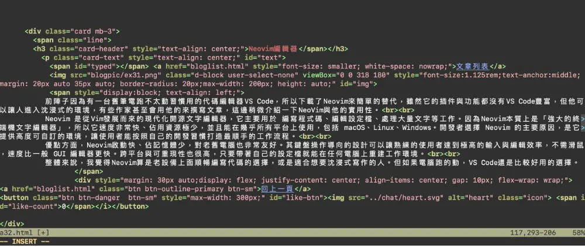

文章列表
前陣子因為一台舊筆電跑不太動習慣用的代碼編輯器，所以下載了Neovim來簡單的替代看看。雖然它的插件與功能都沒有VS Code豐富，但他可以讓人進入沈浸式的環境，有些作家甚至會用他的來撰寫文章，這邊稍微介紹一下NeoVim與他的實用性。

使用Command Line來編輯，整體偏向復古的風格。雖然編輯器主流是VS Code，Neovim仍有許多支持者
Neovim 是從Vim發展而來的現代化開源文字編輯器，它主要用於編寫程式碼、編輯設定檔、處理大量文字等工作。因為Neovim本質上是「強大的終端機文字編輯器」，所以它速度非常快、佔用資源極少，並且能在幾乎所有平台上使用，包括 macOS、Linux、Windows。開發者選擇 Neovim 的主要原因，是它提供高度可自訂的環境，讓使用者能按照自己的開發習慣打造最順手的工作流程。
優點方面，Neovim啟動快、佔記憶體少，對老舊電腦也非常友好。其鍵盤操作導向的設計可以讓熟練的使用者達到極高的輸入與編輯效率，不需滑鼠，速度比一般 GUI 編輯器更快。跨平台與可重現性也很高，只要帶著自己的設定檔就能在任何電腦上重建工作環境。
整體來說，我覺得Neovim算是老設備上面順暢編寫代碼的選擇，或是適合想要沈浸式寫作的人。但如果電腦跑的動，VS Code還是感覺比較好用。